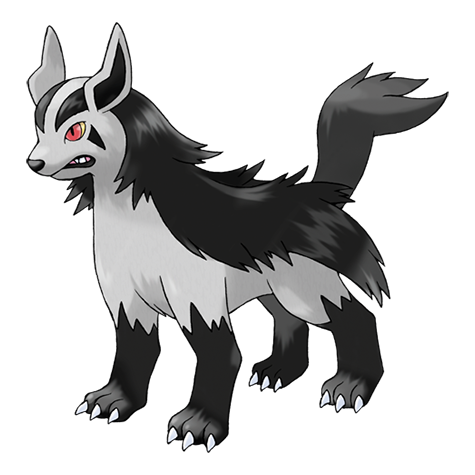

Top 10 Hoenn Region Pokemon
12/9/2024Introduction
The Gameboy advance was unique for Pokémon because it only introduced one generation of Pokémon with it being the Hoenn region. The Hoenn region includes a lot of awesome Pokémon so why not rank the ten best ones.
10. Mightyena
Mightyena is a great Pokemon for you to use in a playthrough of the reigion. It has a decent pool of dark and normal type attacks. It has fine coverage moves and some good support. It also has a great design.
9. Ludicolo

Who doesn't like dancing pineapple. Ludicolo is just a fun Pokémon and is the first fully evolved Pokémon to combine two starter types in water and grass. It has great selection of grass and water moves like giga drain and hydro pump.
8. Deoxys

Deoxys is a unique pokemon because it is the one of the first pokemon with multiple forms with it having four. A basic form for offense, an attack form for even more offense, a defense form that turns that offence into defense, and a surprisingly balanced speed from with incredible speed. It has great psycic type attacks but also has access to a lot of other types for coverage like knock off for dark and zap cannon for electric.
7. Blaziken

Our first starter and it is awesome. This fire chicken would be the first in a fairly long line of fire fighting starter pokemon. It has lots of power with great fire options and fighting. It also has the ridiculous hidden ability of speed booster that increases its speed every turn that it is out.
6. Groudon

The first of the hoenn legendary trio. This giant land lizard is said to be responsible for the land of the world. It automatically sets harsh sun when it comes out and it has access to great ground and fire type attacks, as well as solar beam. Its primal form makes even better use of those fire type attacks with its newly added fire typing and desolate land which negates water type attacks while boosting those fire type attacks to a ridiculous proportion.
5. Swampert

Swampert is a unique Pokémon in that it only has one weakness with that being grass. Other wise it is really great defensively. It has great access to good moves and a cool design. Its mega evolution is also great with it getting jacked.
4. Kyogre

Kyogre is Groudons counterpart and sworn enemy. It has similar attributes to Groudon but in respect to the oceans. It has access to some great moves like origin pulse and thunder. Its weather snuffs out any flame. While it is not necessary for it, it a big help still.
3. Metagross

One of two sudo-legendary pokemon, this iron spider is really cool in the respect that it is a strong steel psychic pokemon and it is my favorite psychic in general. Metagross is really good for having great moves and an ability that makes it ignore any stat changes form the opponents in clear body. Its mega evolution is great for being a steam engine of pain with increasing its attack and giving it better attack and tough claws, which makes it even more of an offensive menace.
2. Sceptile

The starter I chose for my Hoenn playthrough and it is just plain cool. It has great stats for a playthrough and an awesome mega evolution that gives it a rocket tail. While not my first experience using a grass starter, it was a good one.
1. Rayquaza

Rayquaza is the number one on this list, number one of shiny pokemon for me, and is just number one in general. Dragon is my favorite type in pokemon and so a dragon being my favorite only makes sense. It has powerful moves to pull from like Dragon Accent, Dragon claw, Thunder, waterfall, and more. Its ability counters Groudon and Kyogre with air lock negating weather. Its mega evolution is also busted by causing all flying type weaknesses to be negated. Really fun pokemon.